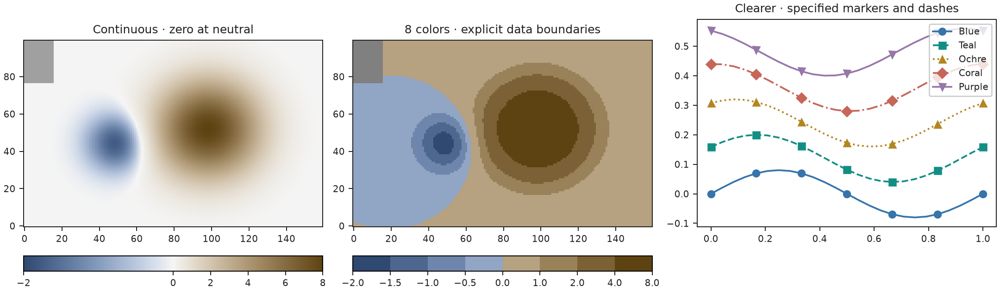
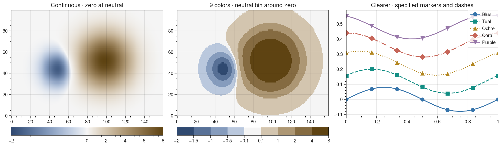
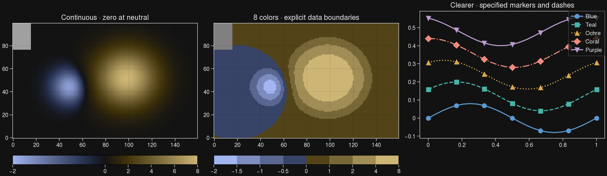
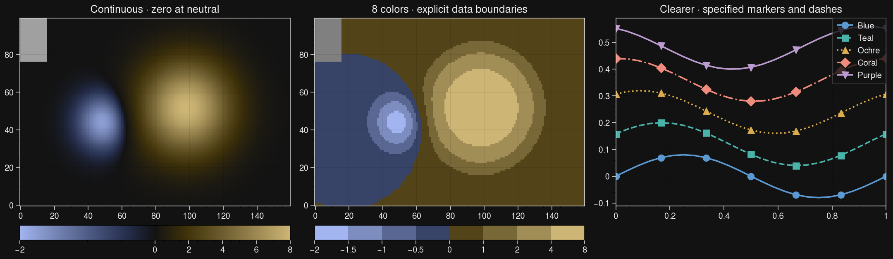

H4a · Matplotlib, Plotly and UltraPlot · the selected Clearer categorical design
The uniform eight-color selection fails the existing profile. Explicit optimized positions pass every float/8-bit normal/CVD discrete gate. Both endpoints and mirrored arms are retained. These positions represent colors; the physical data boundaries in the figures are chosen separately.
t = [0.000000, 0.093750, 0.187500, 0.277344, 0.722656, 0.812500, 0.906250, 1.000000]
Existing uniform sampling and all H0–H3 numerical implementations remain unchanged.




Both panels use −2 to +8, with zero at the source neutral. Hover and zoom work offline. Missing cells use the native gap behavior.
Continuous exports pass a finite-grid Oklab approximation tolerance of .002. Reports include float and quantized errors for all eight conditions. This is approximation evidence; figure-wide accessibility and new default approval remain separate.
Full recipes, errors and backend versions · Usage and methods · Plotting examples